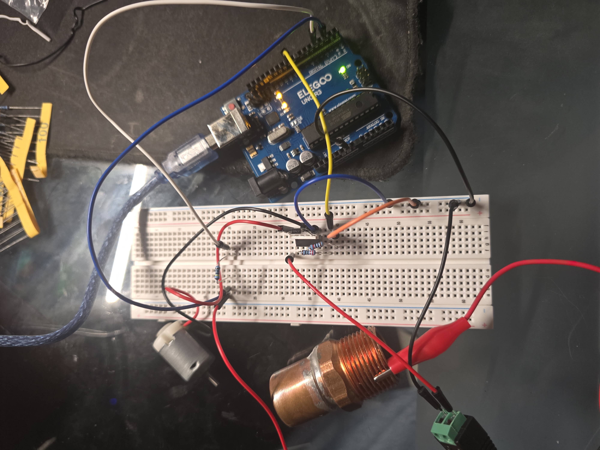

220 ohm resistor between D9 and the gate limits the current spike when the pin charges the MOSFET gate. 10 k ohm resistor from gate to ground keeps the gate at 0 V when D9 isn’t powering it, so the motor doesn't turn on whenever the arduino turns on or uploads code. 1M ohm resistor because I wanted the capacitive sensor to only activate when touched.
Code Chunk
// Include the library so we can read touch
#include
// Create the touch sensor. Pin 4 is the send pin and pin 2 is the receive pin
CapacitiveSensor touchSensor = CapacitiveSensor(4, 2);
void setup() {
// Set pin 9 as OUTPUT
pinMode(9, OUTPUT);
// Start serial communication so to read sensor values
Serial.begin(9600);
}
void loop() {
// Read the touch sensor, averaging 30 samples to reduce noise
long reading = touchSensor.capacitiveSensor(30);
// Converts the sensor reading into a PWM
int speed = map(reading, 20, 3000, 0, 255);
// Constrains the values within 0 to 255
speed = constrain(speed, 0, 255);
// Send speed to the motor
analogWrite(9, speed);
// Print the raw reading for calibration purposes
Serial.println(reading);
// Wait 20 ms
delay(20);
}
Questions:
1: These are the datasheets for the n-mosfet transistor: DMT6009LCT, IRLZ44N, P30N06LE.
Read the text on your mosfet to see which one you have. For your mosfet, what is the absolute maximum amount of current between pins 2 and 3?
I used the IRLZ44N. From reading the datasheet, I found that the absolute maximum amount of current between pins 2 and 3 is 47A at 25C.
2: Draw a schematic for a circuit with using at least your arduino, a DC motor, a flyback diode,
and capacitors between power and ground. Find parts with datasheets you could use for each of these schematic components.

Mosfet
Diode
Arduino
DC Motor
3: Here is the datasheet for the L293D chip: https://www.ti.com/product/L293D.
Draw a schematic using at least your arduino, this chip, and two motors. Write (pseudo) code that shows how you would move the motors both forward,
both back, then one forward one back, and one back then forward.

void setup() {
// Pin 5 is OUTPUT, enable motor 1
pinMode(5, OUTPUT);
// Pin 2 is OUTPUT, input 1A
pinMode(2, OUTPUT);
// Pin 3 is OUTPUT, input 2A
pinMode(3, OUTPUT);
// Pin 6 is OUTPUT, enable motor 2
pinMode(6, OUTPUT);
// Pin 4 is OUTPUT, input 3A
pinMode(4, OUTPUT);
// Pin 7 is OUTPUT, input 4A
pinMode(7, OUTPUT);
}
void loop() {
// Motor 1 speed
analogWrite(5, speed);
// Motor 2 speed
analogWrite(6, speed);
//Both forward:
digitalWrite(2, HIGH);
digitalWrite(3, LOW);
digitalWrite(4, HIGH);
digitalWrite(7, LOW);
// Both backward
digitalWrite(2, LOW);
digitalWrite(3, HIGH);
digitalWrite(4, LOW);
digitalWrite(7, HIGH);
// Motor 1 forward, Motor 2 backward
digitalWrite(2, HIGH);
digitalWrite(3, LOW);
digitalWrite(4, LOW);
digitalWrite(7, HIGH);
// Motor 1 backward, Motor 2 forward
digitalWrite(2, LOW);
digitalWrite(3, HIGH);
digitalWrite(4, HIGH);
digitalWrite(7, LOW);
}
4: Did you use AI tools in completing this assignment? If yes, please provide details on how/when, as well as a brief reflection.
If you used an LLM, please 'share' your conversation and include it as part of your submission, or cite the prompt(s) you used and the output.
If no, you can either leave this question blank, or provide other information if you'd like.
I did not use AI to complete this assignment.